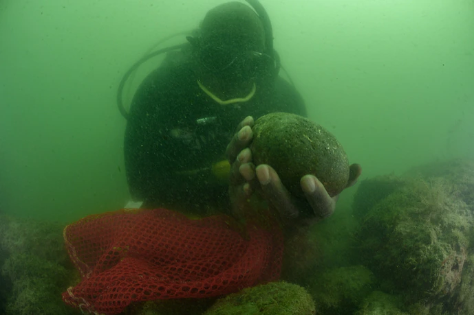
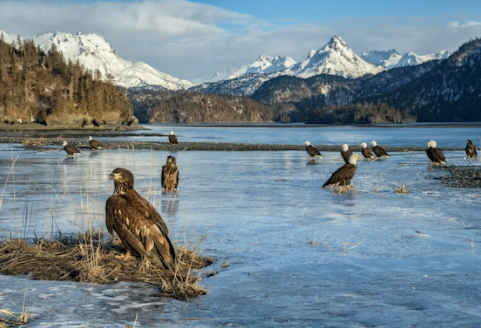
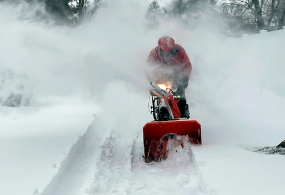

Magazine
A diver's hunt for lost slave ships led to an incredible journey
Read
Adventure
Into the Depths: A 6-part series featuring...
Read

Science
First dinosaur found with respiratory diesease
Read
Todays's Picks

Animals
Most U.S. eagles suffer from lead poisoning, study suggests

Environment
How are winter storm watches, advisories and warnings different?
History and Culture
This 4,000-year-old skull just received a new face
Out of Eden Walk
A remote village in China pins its hopes on the stars
Wildlife Watch
Mexican cartels are increasingly moving into wildlife crime